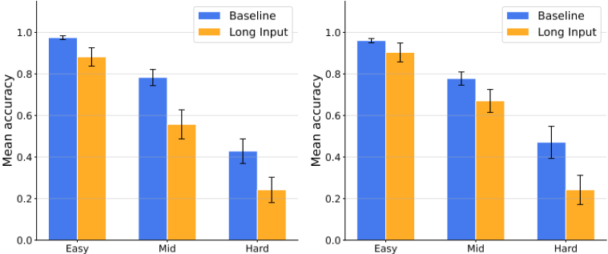
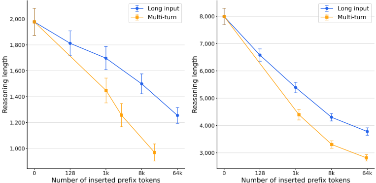
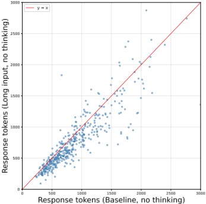
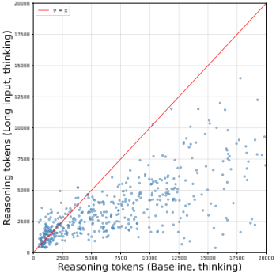
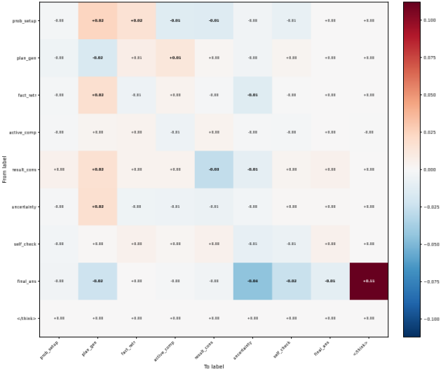
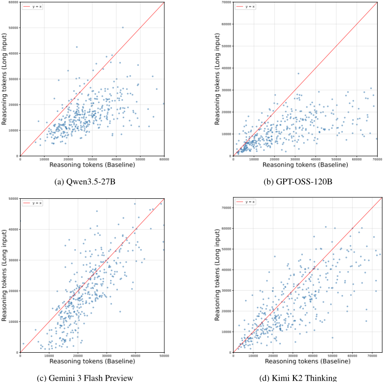

Reasoning Shift：上下文如何悄然缩短 LLM 的推理
论文系统研究了推理模型在非隔离上下文下的行为稳定性：当同一问题伴随长无关文本、多轮独立对话历史或作为复杂任务的子任务出现时，多个主流推理模型（Qwen3.5-27B、GPT-OSS-120B、Gemma 4 31B、Gemini 3 Flash Preview、Kimi K2 Thinking）生成的推理 token 最多减少 65%，且压缩集中在给出候选答案之后的验证阶段，self-verification 与不确定性管理行为（如 double-checking）显著减少，同一推理前缀在非隔离条件下还获得更高的 verbalized confidence。准确率下降集中在中高难度题目（IMOAnswerBench 上各模型降 9%-15%）。缓解实验表明'最大推理努力'类提示基本无效，而在 SFT 数据中混入 masked 无关上下文做轻量微调可以稳定推理长度，但无法完全恢复性能。对团队而言，这是'上下文组织方式会静默改变模型推理行为'的直接实证，说明在长上下文、多轮与子任务场景中需要监控推理行为并优先做上下文隔离，而不能依赖提示修复。
推理模型（test-time scaling、长 CoT）的推理行为对上下文条件是否鲁棒？具体而言：当同一子问题被大量无关上下文包围、出现在多轮对话历史中、或作为复杂任务的子任务呈现时，模型能否像在隔离条件下求解时一样进行充分推理？论文关注这种'推理偏移'（Reasoning Shift）对性能的影响及可行的缓解手段。
在 IMOAnswerBench、GPQA-Diamond、MATH-500、LiveCodeBench 上对比 Baseline 与三种非隔离条件（Long Input：插入 64k token 的 Shakespeare 文本；Multi-turn：多轮独立任务对话；Subtask：同一查询内求解两个独立问题），测量准确率与推理 token 数。分析层面：采用 Venhoff et al. 的句子级功能分类框架（problem setup、plan generation、uncertainty management 等）统计推理轨迹的标签转换矩阵；通过截断末尾 64 token 后在不同上下文条件下重采样的干预实验，以及注入 self-confidence prompt 的 verbalized confidence 实验，定位行为变化的来源。缓解层面：对比 max reasoning effort 提示（DeepSeek v4 所用 prompt）与针对性 SFT——在 allenai/Dolci-Think-SFT-7B 数据的 10% 子集上用 4 种增强策略（原文保留、前置 Shakespeare 片段、前置单轮/多轮无关对话）混入至多 16k 无关上下文并 mask 其损失，微调 Olmo-3-7B-Think-SFT。
同一问题在非隔离上下文条件下推理 token 平均最多减少 65%（Long Input 条件下所有模型在 IMOAnswerBench 上 p < 10^-10，paired Wilcoxon signed-rank test）
IMOAnswerBench 上 Subtask/Long Input 场景准确率下降：Qwen3.5-27B 12%、GPT-OSS-120B 9%、Gemini 3 Flash Preview 15%、Kimi K2 Thinking 9%
Qwen3.5-27B：数百 token 的干扰即可使平均推理长度减少 18%，进一步增大 prompt 使推理减少 50%；Multi-turn 中对话轮数增加也逐步缩短推理
思考模式下推理长度减少 53%（8003→3762 tokens），非思考模式下响应长度仅减少 19%（1664→1348 tokens），现象在 thinking mode 中显著更明显
首个候选答案出现之后的推理段被压缩得更严重：Long Input 为 -36.1%、Multi-turn 为 -21.1%（整体轨迹缩短分别为 -12.4% 与 -5.5%）
重采样实验：几乎完成的推理轨迹在 Long Input 条件下 46% 直接结束，Baseline 仅 21%，且 'wait'、'alternatively'、'but' 等自检词频下降
同一推理前缀在非隔离条件下获得更高的 verbalized confidence（最高置信度比例显著更高，p < 0.001，one-sided McNemar test）
max effort 提示在 Long Input 下仅使 GPT-OSS-120B 多生成约 14% token（13,494 vs 11,876），相对 max effort baseline 仍缩短 51%，与标准提示的缩短率一致，提示无法逆转偏移
SFT 后模型在 Multi-turn(32k) 等场景下推理长度接近 baseline（原模型约降 30%），GPQA-Diamond 与 MMLU-Pro 性能保持，但性能下降本身未被抵消
LiveCodeBench 上现象同样存在：Qwen3.5-27B 在 multi-turn 设置下推理 token 减少近 3.6 倍
区别于已有长上下文退化研究（检索退化如 needle-in-a-haystack、multi-turn 中错误假设固着、纯输入长度的伤害），本文首次系统刻画'推理偏移'现象：上下文条件会静默压缩推理轨迹，并选择性抑制候选答案之后的 self-verification 与 uncertainty management 行为；通过截断重采样与置信度干预实验将行为变化归因于上下文条件本身而非轨迹内容，并给出'提示缓解无效、轻量 SFT 可部分缓解'的可操作结论。
相关度级别：high
命中能力域：3.1 上下文工程与记忆 | 3.2 提示工程 | 3.5 评测与可靠使用
理由：直接命中 3.1（上下文工程与记忆）：论文证明上下文成分（无关前缀、对话历史、子任务框架）会静默改变模型推理行为——推理缩短、自检减少、置信度虚高——这意味着团队在 RAG、多轮会话、Agent 长上下文场景中的产出质量风险可能来自上下文组织而非模型能力本身，论文也明确将其定位为 'the problem of context management for LLMs and LLM-based agents'。同时命中 3.5（评测与可靠使用）：提供了'同题不同上下文条件'的对照评测方法、推理行为监控指标（推理长度、自检词频、verbalized confidence）以及 AI 应用的实证研究范式。与 3.2 相关：论文实证了'请更深入思考'类推理努力提示在污染上下文下失效，对团队提示设计有直接警示。SFT 缓解手段超出团队'不训练模型'的定位，但诊断方法与上下文隔离策略可直接落地。
建议动作：深入精读并做内部分享
arXiv:2604.01161v2 [cs.LG] 2026年6月3日
表现出测试时扩展行为（如扩展的推理轨迹和自我验证）的大语言模型（LLM），已在复杂的长期推理任务上展现出卓越的性能。然而，这些推理行为的鲁棒性仍未得到充分探索。为探究这一问题，我们对多个推理模型在三种场景下进行了系统性评估：（1）附加了冗长且无关上下文的问题；（2）包含独立任务的多轮对话设置；（3）作为复杂任务中子任务呈现的问题。我们观察到一个有趣的现象：在不同的上下文条件下，推理模型对同一问题所产生的推理轨迹往往比问题单独呈现时所产生的轨迹短得多（最多缩短65%）。更细粒度的分析表明，这种压缩与自我验证和不确定性管理行为（如复核）的减少相关。尽管这种行为转变不会损害简单直接问题上的性能，但可能会影响更具挑战性任务上的性能。此外，我们表明，有针对性的监督微调可以部分缓解无关上下文带来的不利影响。我们希望我们的发现能进一步引起人们对推理模型鲁棒性以及LLM和基于LLM的Agent上下文管理问题的关注。
近年来，测试时扩展（test-time scaling）已成为一种颇具前景的策略，其通过在推理阶段分配更多计算来提升大语言模型（Large Language Models, LLM）的性能，使模型无需重新训练即可适应输入复杂度 [OpenAI et al., 2024, DeepSeek-AI et al., 2025]。测试时扩展的一个突出例子是思维链（Chain-of-Thought, CoT）[Kojima et al., 2022, Wei et al., 2022]。随着强化学习（Reinforcement Learning, RL）以及其他后训练方法的最新进展，LLM 现已具备思考模式，使其能够在回答用户查询之前生成较长的推理轨迹。重要的是，推理型 LLM 的现代进展往往与模型对自身解题方式进行自我反思的能力密切相关，这体现在其 CoT 中存在的高层模式上，例如回溯、不确定性管理和自我验证 [Gandhi et al., 2025, Venhoff et al., 2025]。这些模式通常伴随着推理轨迹长度的增加。
与此同时，近年来长上下文语言模型不断兴起，其上下文窗口已扩展至数十万甚至数百万个 token [Dubey et al., 2024, Anthropic, 2024, Google DeepMind, 2025c]。这些进展为测试时扩展提供了充足的空间，使模型能够在单一上下文内进行探索、反思和总结，从而支持复杂推理 [Liu et al., 2025a]、多阶段证明者-验证者流水线 [Shao et al., 2025] 以及复杂的 Agent 工作流 [Team et al., 2025]。然而，多项研究已经揭示了与更长上下文相关的显著局限，例如从长上下文中检索相关数据的能力下降 [Kamradt, 2023]、进行上下文学习（in-context learning）的能力减弱 [Li et al., 2024]、在多轮对话中从错误假设中恢复的能力受损 [Laban et al., 2026]，以及对长输入执行多步推理的能力降低 [Ling et al.,
† Yandex ‡ HSE University。通信作者：rodionovgleb@yandex-team.ru 。
预印本。
2025]。此外，Du et al. [2025] 证明，仅凭输入本身的长度就可能损害 LLM 的性能，这种影响与检索质量无关，且在不存在任何干扰信息的情况下依然成立。
随着多种测试时策略以及在长期任务上工作的 Agent 的兴起，一些自然的问题随之而来：“上下文的长度和内容如何影响模型的推理能力？”尤其是：“如果模型在上下文中面对一个带有无关数据的孤立子问题，它是否会像单独处理该问题时那样对其进行求解？”
在这项工作中，我们研究了一个令人惊讶的现象：我们观察到，在不同的上下文条件下，模型解决相同问题的方式存在显著的分布偏移（distribution shift）。我们探讨了在简单干扰条件下推理质量与性能如何变化：（1）附加了冗长且无关上下文的问题；（2）包含独立任务的多轮对话场景；（3）作为复杂任务中的子任务呈现的问题。特别地，我们发现推理模型在非隔离的上下文条件下解决问题时，往往会产生明显更少的推理 token。对推理链的分析表明，这种压缩与自我验证和不确定性管理行为（如复核）的减少相关。虽然推理轨迹的这种缩减可能会在较简单的问题上减少过度思考（overthinking）而不牺牲准确性，但它会导致在更具挑战性的任务上出现性能下降。最后，我们研究了几种缓解策略，并表明：尽管基于提示的干预措施效果有限，但有针对性的监督微调可以部分提升对无关上下文的鲁棒性。
我们希望我们的发现能进一步引起人们对推理模型鲁棒性以及LLM和基于LLM的Agent上下文管理问题的关注。
思维链（Chain-of-Thought, CoT）推理。测试时扩展（test-time scaling）带来了一场范式转变，使模型能够进行长思维链推理，并诱导出复杂的推理行为，使其在竞赛数学和编程任务中表现卓越。推动这场变革的核心技术是大规模强化学习（RL），它能够激发自我验证和迭代改进等复杂推理行为 [OpenAI et al., 2024, DeepSeek-AI et al., 2025, Shao et al., 2024, Yu et al., 2025, Kumar et al., 2024]。后续工作探索了实现测试时扩展和强大推理性能的其他方法 [Muennighoff et al., 2025, Ye et al., 2025]。
额外的思考预算在根据输入问题的复杂度调整推理努力方面引入了新的挑战 [Yang et al., 2025a]。Su et al. [2025] 分析了推理长度与答案正确性之间的关系，发现 LLM 在较简单的问题上倾向于过度思考（overthinking），而在较难的问题上则思考不足（underthinking），这表明模型可能无法相应地校准其推理长度。Aggarwal et al. [2025] 提出了一个统一的基准测试（benchmark），用于联合评估 LLM 中的过度思考与思考不足。
为了分析 LLM 如何在其长 CoT 轨迹中应对困难的推理问题，Venhoff et al. [2025] 在推理轨迹中定义了不同的推理功能，并使用 LLM 裁判（LLM judge）根据功能角色对每个句子进行分类。Bogdan et al. [2025] 采用其框架，提出通过识别引导推理轨迹走向的步骤来分析长推理轨迹，将句子组织为不同类别并测量其因果影响，凸显了规划类或不确定性管理类句子的重要性。Muennighoff et al. [2025] 还证明，当模型试图停止时，通过干预推理轨迹来强制进行自我反思，可能会带来性能提升。后续工作研究了准确率与推理轨迹高层特征（如长度、复核比例等）之间的关系 [Wu et al., 2025, Hassid et al., 2025, Feng et al., 2025]。
长上下文与上下文管理。近年来，模型的上下文长度取得了显著增长 [Dubey et al., 2024, Anthropic, 2024, Google DeepMind, 2025c]。尽管上下文扩展的规模令人印象深刻，但这些模型声称支持的上下文长度与其能够有效处理的实际上下文长度之间仍存在显著差距 [Liu et al., 2025b]。常见的局限通常涉及基于检索的评估 [Kamradt, 2023] 以及多跳追踪与聚合 [Hsieh et al., 2024]。然而，Du et al. [2025] 表明，即使检索完美无缺，长上下文也可能导致性能下降，即便是在模型被强制只关注相关 token 的合成设置中也是如此。Laban et al. [2026] 借助分片模拟（sharded simulation）——即一组共同传达与原始指令相同信息的较小指令——展示了多轮设置中的显著性能下降。在这种设置下，模型往往过度依赖其在较早轮次中做出的错误假设。
2
为克服长上下文的局限并解锁测试时计算（test-time compute）的进一步扩展，已有多种方法被提出，包括上下文压缩、迭代摘要和外部记忆模块 [Anthropic, 2025, Liu et al., 2025a, Yan et al., 2025, Tekparmak and Ömer Kaya, 2025]。另一条并行的研究路线则针对可拆分为相互独立子问题的问题，将其委托给递归自调用（recursive self-calls）处理，这有可能提高效率，并自然地允许维持紧凑的上下文表示 [Yang et al., 2025b, Jin et al., 2025, Ning et al., 2024, Zheng et al., 2025]。
本节介绍旨在回答一个关键问题的实验：当被无关上下文包围时，模型求解一个孤立子问题的效果能否与其在孤立状态下求解时同样有效？这一探究源于两点观察。首先，复杂的推理任务通常可以分解为不需要全局上下文的独立子任务。其次，长时间运行的 Agent 越来越多地运行在宽泛的通用上下文中，而这些上下文不可避免地包含与特定用户查询或子任务无关的细节。
为了评估模型在不同上下文条件下对相同问题进行推理的能力，我们比较了以下几种设置：
| Model. | Baseline.Acc. | Baseline.Tokens | Subtask.Acc. | Subtask.Tokens | Long Input.Acc. | Long Input.Tokens | Multi-turn.Acc. | Multi-turn.Tokens |
|---|---|---|---|---|---|---|---|---|
| IMOAnswerBench | IMOAnswerBench | IMOAnswerBench | IMOAnswerBench | IMOAnswerBench | IMOAnswerBench | IMOAnswerBench | IMOAnswerBench | IMOAnswerBench |
| Qwen3.5-27B | 74.5 | 28,771 | 62.4 | 20,165 | 67.8 | 16,415 | 67.0 | 17,404 |
| Gemma 4 31B | 72.7 | 9,240 | 52.8 | 5,635 | 67.0 | 6,252 | 71.0 | 7,530 |
| GPT-OSS-120B | 73.8 | 24,180 | 64.0 | 17,408 | 64.0 | 11,876 | 69.3 | 19,831 |
| Gemini 3 Flash Preview | 82.8 | 23,090 | 67.0 | 13,653 | 80.3 | 19,879 | 82.5 | 21,693 |
| Kimi K2 Thinking | 74.8 | 29,615 | 65.0 | 19,630 | 70.8 | 23,380 | 72.8 | 30,421 |
| GPQA-Diamond | GPQA-Diamond | GPQA-Diamond | GPQA-Diamond | GPQA-Diamond | GPQA-Diamond | GPQA-Diamond | GPQA-Diamond | GPQA-Diamond |
| Qwen3.5-27B | 85.1 | 12,364 | 83.6 | 7,279 | 82.1 | 6,939 | 83.8 | 4,722 |
| Gemma 4 31B | 84.1 | 3,638 | 79.8 | 2,219 | 82.6 | 2,047 | 78.5 | 1,353 |
| GPT-OSS-120B | 78.3 | 10,762 | 64.0 | 7,466 | 57.6 | 3,711 | 72.5 | 4,476 |
| Gemini 3 Flash Preview | 89.6 | 12,927 | 89.4 | 7,918 | 89.6 | 10,922 | 88.7 | 3,334 |
| Kimi K2 Thinking | 81.6 | 11,121 | 70.7 | 7,635 | 78.0 | 7,619 | 73.2 | 4,669 |
| Model. | Baseline.Acc. | Baseline.Tokens | Subtask.Acc. | Subtask.Tokens | Long Input.Acc. | Long Input.Tokens | Multi-turn.Acc. | Multi-turn.Tokens |
在主要实验中，我们在 IMOAnswerBench [Luong et al., 2025] 和 GPQA-Diamond Rein et al. [2023] 上评估了以下模型：Qwen3.5-27B [Qwen Team, 2026]、GPT-OSS-120B [Agarwal et al., 2025]、Gemma 4 31B [Google DeepMind, 2025b]、Gemini 3 Flash Preview Google DeepMind [2025a] 以及 Kimi K2 Thinking [Moonshot AI, 2025]。有关编码基准测试（benchmark）的补充实验请参见附录 B。对于每个模型，我们同时报告准确率和所生成的推理 token 数量。IMOAnswerBench 由 400 道奥赛级数学题组成，这些题目具有简短且可验证的答案（包括数学表达式）：我们使用 Gemini 3.1 Pro Preview Google DeepMind [2025a]，并采用 AnswerAutoGrader[Luong et al., 2025] 的原始提示词，将其作为评判（judge）进行自动评估。对于 GPQA-Diamond，我们报告 2 次运行的平均结果。
3

对于 Subtask 场景，模型在同一次查询中求解两个相互独立的问题——我们按如下方式构造输入：每个任务各出现一次，一次作为第一个任务，一次作为第二个任务。我们报告求解这两个问题的平均准确率，以及除以 2 之后的推理 token 数量，后者表示花费在单个任务上的平均推理 token 数量。
有关实验设置的更多细节请参见附录 A，有关代码生成任务的补充评估请参见附录 B。
结果见表 1。有趣的是，我们观察到在 IMOAnswerBench 的所有 Subtask 和 Long Input 场景中均出现轻微的性能下降：Qwen3.5-27B 下降 12%，GPT-OSS-120B 下降 9%，Gemini 3 Flash Preview 下降 15%，Kimi K2 Thinking 下降 9%。我们在附录 C 中报告了 Subtask 场景的详细评估。
重要的是，在两种基准测试（benchmark）的不同非基线上下文条件下，所涵盖的所有模型都生成了明显更短的推理轨迹，对于相同的问题，平均生成的推理 token 最多减少 65%（在 IMOAnswerBench 的 Long Input 条件下对所有模型进行配对 Wilcoxon 符号秩检验，p < 10 - 10）。各任务生成 token 数量的对比请参见图 5。

4


为了进一步考察任务难度与所观察到的性能下降之间的相互作用，我们在 Baseline 和 Long Input 两种条件下，从 IMOAnswerBench 中选定的 30 个问题上对每个任务各采样 50 次运行，并根据基线准确率将任务划分为简单、中等和困难三档。我们发现，长输入下的准确率下降不成比例地集中在中等和困难问题上，见图 1。这表明由额外上下文引发的推理偏移对直截了当的问题而言相对无害，但随着任务难度的上升，其代价会越来越大。
重要的是，如图 2 所示，在 Long Input 和 Multi-turn 两种场景中，增加输入上下文的数量都会导致推理长度逐渐且持续地缩短。例如，对于 Qwen3.5-27B，即使是短暂的干扰（数百个 token）也可能足以使平均推理长度减少 18%，而进一步增大提示规模会使推理减少 50%。在 Multi-turn 设置中，向聊天历史中添加更多轮次也会逐渐缩短推理长度。
我们还进行了额外的实验，以确定这一效应是否为推理模式所特有。为此，我们在 MATH-500 基准测试 [Lightman et al., 2023] 上使用 Long Input 场景评估了同时具备 thinking 和 non-thinking 两种模式的模型 Qwen3.5-27B（各任务生成 token 数量的对比见图 3）。对于 non-thinking 模式，我们报告的是响应长度。Qwen3.5-27B 在 non-thinking 模式下响应长度减少 19%（Baseline 为 1664 个 token，Long Input 为 1348 个 token），推理长度减少 53%（Baseline 为 8003 个 token，Long Input 为 3762 个 token）。虽然 thinking 和 non-thinking 两种模式在不同上下文条件下都表现出统计上的变化，但我们观察到所述现象在 thinking 模式中明显更为显著。
| Model. | Baseline.Acc. | Baseline.Tokens | Subtask.Acc. | Subtask.Tokens | Long Input.Acc. | Long Input.Tokens | Multi-turn.Acc. | Multi-turn.Tokens |
|---|---|---|---|---|---|---|---|---|
| Olmo-3-7B-Instruct | 91.2 | 925 | 89.1 | 1,139 | 89.8 | 1,162 | 90.5 | 1,089 |
| Olmo-3-7B-Think-SFT | 94.5 | 2,671 | 90.2 | 1,829 | 91.4 | 1,908 | 89.1 | 1,611 |
| Olmo-3-7B-Think-DPO | 93.5 | 3,051 | 89.7 | 2,286 | 91 | 2,437 | 88.7 | 2,395 |
| Olmo-3-7B-Think | 95.2 | 3,664 | 92.1 | 2,851 | 93.2 | 2,859 | 92.2 | 2,788 |
| Model. | Baseline.Acc. | Baseline.Tokens | Subtask.Acc. | Subtask.Tokens | Long Input.Acc. | Long Input.Tokens | Multi-turn.Acc. | Multi-turn.Tokens |
5
聚焦于推理模式，我们分析了来自后训练不同阶段的检查点（checkpoint），以考察它们在不同上下文条件下如何影响推理偏移。为此，我们评估了 Olmo3 模型的不同检查点（Olmo 等人 [2025]）。简而言之，我们在所有推理检查点上都观察到了上述现象。结果如表 2 所示。
我们在第 3 节中的实验表明，在不同上下文条件下，针对相同问题所生成的推理 token 数量存在显著差异。在本节中，我们分析这些推理轨迹之间的差异。实验设置的详细信息请参见附录 D。
我们检查了 Qwen3-32B、Qwen3.5-27B 和 Gemma 4 31B 针对 MATH500 问题生成的推理轨迹。为便于清晰呈现，此处报告 Qwen3-32B 的结果，并引用针对其他模型的补充实验。
首先，我们人工检查这些轨迹，以寻找上下文可能如何影响推理的任何证据——我们没有发现任何迹象表明模型被查询迷惑或未能理解任务。具体而言，在研究 Qwen3-32B 在 Long Input 提示下产生的推理轨迹时，我们只发现对提示中无关部分的简短提及；我们在附录 F 中报告了若干示例。这些都是简短而敷衍的确认：模型注意到该前缀，将其标记为无关内容，随即继续推理。虽然额外的上下文显然影响了模型的内部计算，但我们没有发现任何证据表明插入的内容在语义层面对模型产生了超出简单确认的影响。
随后，我们比较 Baseline 轨迹是需要更多时间才能得出答案，还是因为在找到候选答案之后表现出更强的验证模式而变得更长。为此，我们确定每条轨迹中首次陈述候选答案的位置。结果报告于表 13。有趣的是，虽然观察到一些差异（与 Baseline 相比，Long Input 为 -12.4%，Multi-turn 为 -5.5%），但这些差异显著低于所有推理轨迹的平均缩减幅度，这意味着推理轨迹中从首次找到候选答案到轨迹结束的部分被更大幅度地缩减（与 Baseline 相比，Long Input 为 -36.1%，Multi-turn 为 -21.1%）。其他模型也呈现相同的趋势。
为了进一步探究推理长度显著差异的本质，我们采用 [Venhoff et al., 2025] 提出的框架，对长推理轨迹进行句子级分析。我们将轨迹中的每个句子归入以下类别：问题设定（problem setup）、计划生成（plan generation）、事实检索（fact retrieval）、主动计算（active computation）、结果整合（result consolidation）、不确定性管理（uncertainty management）以及最终答案输出（final answer emission）。我们研究这些标签在推理轨迹内的转移矩阵。图 4 展示了 Baseline 与 Long Input 设置下转移热力图的差异。我们注意到该热力图中绝对值最大的项：从最终答案输出到思考轨迹结束的转移（Baseline 为 57%，而
| Token | 0 ( Baseline ) | 128 | 16k |
|---|---|---|---|
| </think> | 21% | 26% | 46% |
| Wait | 11% | 10% | 5% |
| Alternatively | 17% | 11% | 5% |
| But | 46% | 38% | 20% |
| Maybe | 23% | 17% | 9% |
| Token | 0 ( Baseline ) | 128 | 16k |
Long Input 条件下为 68%），这可能表明存在显著的行为差异：一旦给出最终答案，轨迹更常完成，而 Baseline 轨迹则有更大的概率发起额外的自检。
然而，这些变化可能受到推理轨迹本身内容的影响，而非上下文条件的影响。为验证这一点，我们进行了一项重采样（resampling）实验：我们取在 Long Input 和 Multi-turn 条件下产生的轨迹，从推理部分移除末尾的一小部分 token（最后 64 个 token），然后在不同的上下文条件下重采样相同数量的 token：Baseline、Long Input (128)（一种与 Long Input 类似、但仅插入 128 个 token 的条件）、Long Input (16k) 和 Multi-turn。我们使用与原始轨迹相同的采样参数对每条轨迹进行重采样——这些参数是针对推理任务所推荐的。对于重采样后的轨迹，我们比较已完成轨迹的比例。结果见表 3。我们观察到一个有趣的现象：当从几乎完成的推理样本出发、在不同上下文条件下进行重采样时，所有非 baseline 的上下文条件都表现出更高的已完成推理轨迹比例，以及在自我验证和不确定性管理过程中所用词汇的频率更低。Long Input 条件下已完成轨迹的比例为 46%，而 Baseline 为 21%，同时伴随在自我验证和不确定性管理中所用词汇频率的降低，例如 "wait"、"alternatively" 和 "but"。重采样样本的示例请参见附录 G。在表 14 中，我们还额外报告了针对其他模型和 Multi-turn 设置的类似重采样实验的结果，其呈现出相同的趋势。
6
近期研究表明，语言模型会利用置信度（confidence）来驱动其行为 [Kumaran et al., 2026b,c]，这引出一个问题：不同的上下文条件是否会影响模型对其推理的置信度？为验证这一点，我们让模型在不同的上下文条件下对其部分解（partial solutions）的置信度进行言语化（verbalize）表达（类似于我们的重采样实验）。在置信度评估中，我们移除推理轨迹的最后 64 个 token，使用来自 Kumaran 等人 [2026a] 的自我置信度提示（self-confidence prompt）进行干预，并使用贪心解码（greedy decoding）来生成言语化的置信度分数。结果见表 4。我们观察到，由 baseline 与非 baseline 设置产生的相同推理轨迹，在 Baseline 设置下平均获得更低的置信度分数，这与我们重采样实验中 Baseline 上下文设置下更高的自我验证比例相一致。在附录 D 中，我们报告了关于言语化置信度的额外结果，包括使用不同提示和推理前缀的评估，所有结果均得出类似的结论。这些结果表明，模型估计自身置信度的能力对分布外（OOD）上下文条件可能并不鲁棒。
总体而言，我们的结果表明，对于相同的推理前缀，不同的上下文条件可能会抑制诸如自我验证和不确定性管理等高层推理模式，从而使推理轨迹显著变短。
在本节中，我们讨论两种缓解所观察到的推理偏移的潜在方法：（1）提示模型进行更审慎的推理；（2）在包含非基线上下文条件的混合数据上对模型进行微调。我们将依次讨论每种策略。
我们首先研究所观察到的现象是否能够仅通过提示（prompting）来缓解。为此，我们在与主实验相同的条件下评估多个模型，但所使用的提示明确要求进行更审慎、更透彻的推理。结果见表 5。我们尝试了多种提示表述方式，并报告其中表现最佳的一种的结果——即用于 DeepSeek v4 的最大推理努力提示（maximum reasoning effort prompt）[DeepSeek-AI, 2026]，参见附录 A。
总体而言，推理模型对要求额外推理努力的提示表现出有限的敏感性。在基线设置下，最大努力提示生成的推理轨迹略长（平均多出 10-15% 的 token），准确率相当或略有提升。然而，在非基线上下文条件下，同样的提示虽然使轨迹长度产生了类似的相对增加，但所观察到的缩短率与未施加该干预时相同。例如，GPT-OSS-120B 在 Long Input 条件下使用最大努力提示生成的 token 数量约多出 14%（13,494 对比 11,876），但这相对于最大努力基线（27,525 个 token）仍代表 51% 的减少——与使用标准提示时观察到的 51% 减少（24,180 降至 11,876）几乎完全相同。这些结果表明，仅靠提示不足以抵消由非基线上下文条件引起的推理偏移。
| Trace | Baseline | Long Input(128) | Long Input(16k) | Multi-turn |
|---|---|---|---|---|
| Baseline | 62.0% | 68.0% | 90.4% | 78.4% |
| Long Input | 41.2% | 48.2% | 85.4% | 64.4% |
| Multi-turn | 46.8% | 55.5% | 86.7% | 70.5% |
| Trace | Baseline | Long Input(128) | Long Input(16k) | Multi-turn |
7
| Model | Prompt | Baseline.Acc. | Baseline.Tokens | Long Input.Acc. | Long Input.Tokens |
|---|---|---|---|---|---|
| Gemma 4 31B | Standard | 72.7 | 9,240 | 67 | 6,252 |
| Max effort | 73.8 | 10,624 | 70.9 | 7,198 | |
| GPT-OSS-120B | Standard | 73.8 | 24,180 | 64 | 11,876 |
| GPT-OSS-120B | Max effort | 73.9 | 27,525 | 61.8 | 13,494 |
| Qwen3.5-27B | Standard | 74.5 | 28,771 | 67.8 | 16,415 |
| Qwen3.5-27B | Max effort | 74.4 | 28,755 | 70.5 | 15,960 |
| Model | Prompt | Baseline.Acc. | Baseline.Tokens | Long Input.Acc. | Long Input.Tokens |
To study whether the Reasoning Shift effect can be mitigated, we explore a simple supervised finetuning (SFT) approach aimed at preventing models from reducing reasoning length when irrelevant information is present in the context. As shown in Table 2, the reduction in reasoning length becomes substantially more pronounced after reasoning-oriented SFT, while the effect is noticeably weaker for the instruct model. This observation suggests that the phenomenon may emerge during the early stages of reasoning-specific post-training. Motivated by this finding, we focus on mitigating the effect at the SFT stage.
A straightforward approach would be to augment all SFT training samples with large amounts of irrelevant context or synthetic multi-turn interactions. However, such a strategy is computationally expensive and would require retraining reasoning models from an early post-training stage. Instead, we investigate a more practical and resource-efficient setting: adapting an already SFT-trained reasoning model using a relatively small amount of additional data.
Training. We base our experiments on the open-instruct and OLMo-core repositories [Olmo et al., 2025] (version v2.5.0 ).
Starting from the allenai/Dolci-Think-SFT-7B dataset Olmo et al. [2025], we augment training samples with additional irrelevant context. For each sample, one of several augmentation strategies is selected uniformly at random: (1) keeping the original sample unchanged, (2) prepending a long irrelevant Shakespeare text fragment, (3) prepending a single irrelevant user-assistant interaction, or (4) prepending multiple irrelevant user-assistant turns. We limit the amount of inserted irrelevant context to 16k tokens. For multi-turn augmentation, we use user queries from the allenai/Dolci-Think-DPO-7B dataset and generate assistant responses using Olmo-3-7B-ThinkSFT Olmo et al. [2025], producing synthetic prompt-response pairs.
The inserted context tokens are masked during training and therefore do not contribute to the crossentropy loss, similarly to standard prompt tokens in supervised fine-tuning. However, the model still attends to these tokens during the forward pass, meaning that they continue to influence its internal representations.
In total, we fine-tune Olmo-3-7B-Think-SFT on an augmented 10% subset of the original allenai/Dolci-Think-SFT-7B training dataset for 7864 optimization steps, corresponding to 8.24B training tokens and two epochs, i.e., the same number of SFT epochs used in the original training of Olmo-3-7B-Think-SFT .
| Model. | Baseline.Acc. | Baseline.Tok. | Multi-turn(16k).Acc. | Multi-turn(16k).Tok. | Multi-turn(32k).Acc. | Multi-turn(32k).Tok. | Long Input(32k).Acc. | Long Input(32k).Tok. |
|---|---|---|---|---|---|---|---|---|
| Olmo-3-7B-Think-SFT | 94.5 | 2,671 | 92.2 | 1,781 | 89.1 | 1,611 | 91.4 | 1,908 |
| Olmo-3-7B-Think-SFT-Ours | 96.1 | 2,869 | 94.5 | 2,674 | 89.8 | 2,606 | 93.8 | 2,806 |
| Model. | Baseline.Acc. | Baseline.Tok. | Multi-turn(16k).Acc. | Multi-turn(16k).Tok. | Multi-turn(32k).Acc. | Multi-turn(32k).Tok. | Long Input(32k).Acc. | Long Input(32k).Tok. |
Table 6: Model performance with accuracy and average amount of generated reasoning tokens under different context conditions on MATH-500. Background color represents the relative change from the baseline values.
| Model. | GPQA-Diamond.Acc. | GPQA-Diamond.Tok. | MMLU-Pro.Acc. | MMLU-Pro.Tok. |
|---|---|---|---|---|
| Olmo-3-7B-Think-SFT | 42.6 | 9,222 | 49.2 | 1779 |
| Olmo-3-7B-Think-SFT-Ours | 43.1 | 9,164 | 54.2 | 1912 |
| Model. | GPQA-Diamond.Acc. | GPQA-Diamond.Tok. | MMLU-Pro.Acc. | MMLU-Pro.Tok. |
局限性 我们希望强调本文当前版本的若干重要局限性。首先，我们的上下文条件相对简单且为人工构造的：在“真实场景”（in the wild）中（即使用更贴近现实的场景，包括智能体式（agentic）场景）展示并分析所述的推理偏移，是未来工作中极具价值的研究方向。其次，尽管我们提供了大量实证证据，表明上下文条件会系统性地缩短推理轨迹并抑制自我验证行为，但我们的工作并未就这一效应如何在模型内部表示中产生给出机制层面的解释。最后，我们目前既未涉及也未开发任何上下文管理方法，包括基于递归自调用的方法 [Yang et al., 2025b, Jin et al., 2025, Ning et al., 2024, Zheng et al., 2025, Zhang et al., 2025]。
在本文中，我们发现不同的上下文条件可能会影响推理型 LLM 处理相同问题的方式。特别地，我们证明了诸如不确定性管理和自我验证等高层行为模式的分布是脆弱的，会被提示中不相关的上下文所抑制。虽然对于较简单的问题，这可能减少过度思考，但这种行为偏移会在更具挑战性的任务上导致性能下降。我们的结果表明，仅通过提示难以实现对无关上下文的鲁棒性。相比之下，在具有针对性的样例上进行训练，能使模型在存在干扰信息的情况下更好地保持其推理行为。
9
请逐步推理，并将最终答案放在 \boxed{} 中。
你将得到两个相互独立的问题，请分别求解。对于每个问题，请逐步推理，并将最终答案放在 \boxed{} 中。
第一个问题：
第二个问题：
长输入（Long Input）# 旧数据：<莎士比亚戏剧> 旧数据结束。请逐步推理，并将最终答案放在 \boxed{} 中。<问题>
在 Long Input 设置中，我们将来自 [Karpathy, 2015] 的 64000 个 token 的莎士比亚戏剧文本插入到提示中。
| 0 |
|---|
| Baseline, max reasoning effort |
| Reasoning Effort: Absolute maximum with no shortcuts permitted. You MUST be very thorough in your thinking and comprehensively decompose the problem to resolve the root cause, rigorously stress-testing your logic against all potential paths, edge cases, and adversarial scenarios. Explicitly write out your entire deliberation process, documenting every intermediate step, considered alternative, and rejected hypothesis to ensure absolutely no assumption is left unchecked. Put the final answer within \boxed{}. <Problem> |
| 0 |
我们使用 OpenRouter API 来运行主要实验。为确保各设置下的结果相互兼容，我们对每个模型均使用单一固定的供应商。此处我们列出实验中使用的提供商及采样参数：
14
对于每个模型，我们在所有上下文条件下均使用默认采样参数和 80,000 token 的思考预算。这一计算预算足以满足大多数设置/模型，仅 Kimi K2 Thinking 存在少数例外情况（少于 2% 的生成），我们将未完成的生成从分析中剔除，所有并排比较均在模型自然完成生成的题目子集上进行。
我们报告由提供商给出的推理 token 数量，在适用情况下，该数量与我们通过手动分词得到的估计值相符。
对于 Olmo3 实验，我们使用 transformers 库进行本地推理，并采用推荐的采样参数：temperature 0.6、top_p: 0.95、max new tokens 16384。
我们的主要评估算力用于针对 IMO AnswerBench、GPQADiamond 和 LiveCodeBench 的基于 API 的推理。我们通过 OpenRouter 访问被评估的模型。在主要实验中，典型的推理轨迹在每个样例上大约包含 5k–30k 个生成的 token，具体取决于基准测试、模型和提示条件。表 8 总结了用于成本估算的 API 定价。作为一个具体的参考点，对被评估模型集完整运行一次 GPQA-Diamond 的成本约为 180 美元；因此，主要基准测试评估的总 API 成本在数百美元的量级。
第二部分算力用于分析实验，包括各项分析实验和 OLMo 评估。这些实验在本地 GPU 基础设施上运行。由于这些运行包含探索性分析、失败的运行以及论文中未全部报告的中间消融实验，我们报告的是保守的上界估计，而非精确的核算。总体而言，我们估计这些分析和 OLMo 评估实验最多需要 1000 个 NVIDIA A100 GPU 小时。
| Model | Input | Output |
|---|---|---|
| Qwen3.5-27B | $0.195 /M | $1.56 /M |
| Gemma 4 31B | $0.14 /M | $0.40 /M |
| GPT-OSS-120B | $0.039 /M | $0.18 /M |
| Gemini 3 Flash Preview | $0.50 /M | $3.00 /M |
| Kimi K2 Thinking | $0.60 /M | $2.50 /M |
| Model | Input | Output |
为了进一步证明所观察到的推理长度缩短现象能够推广到数学推理任务之外，我们还在 LiveCodeBench 数据集 [Jain et al., 2024] 的代码生成问题上对推理模型进行了额外评估。具体而言，我们使用 code_generation_lite v6 子集，其中包含 1055 个竞赛编程和算法类代码生成任务。
对于 Qwen3.5-27B，我们使用 80k token 的最大生成预算以及 32k token 的上下文限制。对于 GPT-OSS-120B，我们使用 100k token 的生成预算和 28k token 的上下文限制。
在这里，我们观察到了与表 1 中所报告结果类似的现象。Qwen3.5-27B（Qwen Team [2026]）和 GPT-OSS-120B（Agarwal et al. [2025]）在提示中被引入无关或额外的上下文信息时，均表现出明显更短的推理轨迹。特别是，Qwen3.5-27B 在多轮设置下推理长度出现急剧缩短，生成的推理 token 数量比基线设置减少了近 3.6 倍。
15
| Model. | Baseline.Acc. | Baseline.Tokens | Subtask.Acc 1 | Subtask.Acc 2 | Subtask.Tokens | Long Input.Acc. | Long Input.Tokens | Multi-turn.Acc. | Multi-turn.Tokens |
|---|---|---|---|---|---|---|---|---|---|
| Qwen3.5-27B | 87 | 22,837 | 78 | 78 | 16,302 | 85 | 17,429 | 81 | 6,222 |
| GPT-OSS-120B | 89 | 10,666 | 51 | 86 | 7,675 | 88 | 7,173 | 83 | 6,156 |
| Model. | Baseline.Acc. | Baseline.Tokens | Subtask.Acc 1 | Subtask.Acc 2 | Subtask.Tokens | Long Input.Acc. | Long Input.Tokens | Multi-turn.Acc. | Multi-turn.Tokens |
有趣的是，GPT-OSS-120B 在 Subtask 设置中也表现出明显的性能下降，在该设置中，模型需要在单次响应内解决两个任务。
为了评估 Subtask 场景下的平均性能，我们使用两次独立的评审（judge）调用，分别评估每个子问题的正确性。结果如表 10 所示。我们注意到，每个问题各出现一次，一次作为第一个子任务，一次作为第二个子任务。
| Model | Baseline | First subproblem | Second subproblem |
|---|---|---|---|
| Qwen3.5-27B | 74.5 | 66.8 | 58 |
| GPT-OSS-120B | 73.8 | 63.8 | 64.3 |
| Gemini 3 Flash Preview | 82.8 | 68.3 | 65.8 |
| Kimi K2 Thinking | 74.8 | 68 | 62 |
| Model | Baseline | First subproblem | Second subproblem |
| Trace | Baseline | Long Input(128) | Long Input(16k) | Multi-turn |
|---|---|---|---|---|
| Baseline | 93.1% | 95.8% | 96.5% | 96.3% |
| Long Input | 83.8% | 91.5% | 94.2% | 92.7% |
| Multi-turn | 88.6% | 93.1% | 94.0% | 70.5% |
| Trace | Baseline | Long Input(128) | Long Input(16k) | Multi-turn |
为了生成自信心分数，我们复用了 Kumaran 等人 [2026a] 的提示。然而，由于我们旨在估计对未完成推理轨迹的置信度，我们将该提示作为一种干预注入到推理过程中，而不是作为对话的下一轮。
16
每个类别反映答案正确的概率。我会将我的自信心格式化为 **Confidence**: CLASS，其中 CLASS 是上述名称之一（不含概率范围）。
好的，我的自信心是 **Confidence**:
为了获得更稳健的结果，我们还尝试了一种替代提示，要求模型提供 0 到 99 之间的数值分数。我们观察到，在分类提示下，模型通常在自信心最高的两个类别（即 'Highly likely' 和 'Almost certain'）之间进行选择，而在数值变体中则在 98 和 99 之间进行选择。因此，我们报告最大自信心分数的比值。我们没有进行校准，因为我们的分析关注的是不同上下文条件之间自信心的统计变化，而非所报告概率的绝对准确性。数值评估的结果见表 11。我们观察到类似的趋势：对于所有推理轨迹，在基线上下文条件下被赋予最大自信心分数（99）的问题比例显著低于每个非基线条件下的比例；对逐任务配对观测进行单侧 McNemar 检验，p < 0.001。
我们还额外评估了来自更短推理前缀的自信心分数，即在执行类似干预之前保留 50% 的推理轨迹。这使我们能够评估由上下文引起的自信心膨胀是在推理过程的早期便已显现，还是只有在模型
图 4 展示了转移概率矩阵之间的差异。正值表示 Long Input 设置发生该类型转移的概率高于基线（Baseline）。对于该热力图，我们在每种上下文条件下评估了 500 条推理轨迹，由此得到基线条件下的 110,867 次转移和 Long Input 条件下的 80,508 次转移。我们使用 Mann-Whitney U 检验（单侧（Long Input > Baseline））对从最终答案输出到思维轨迹结束这一转移概率的增加进行了统计显著性评估，结果为 p = 0.0011。
在本节中，我们提供了 Qwen3-32B 在 MATH-500 基准测试上对 Long Input 设置中所插入提示词 token 的全部引用。我们注意到，其他模型可能表现出不同的提示词分析模式。例如，Qwen3.5-27B 倾向于在开始解决任务之前先概述提示词的整体结构，通常会较早识别出干扰 token，并得出它们与用户请求无关的结论。
| Trace | Baseline | Long Input(128) | Long Input(16k) | Multi-turn |
|---|---|---|---|---|
| Baseline | 38.0% | 50.3% | 57.8% | 48.6% |
| Long Input | 16.8% | 28.3% | 36.8% | 26.8% |
| Multi-turn | 22.5% | 33.7% | 44.8% | 31.8% |
| Trace | Baseline | Long Input(128) | Long Input(16k) | Multi-turn |
17
| Model | Baseline | Long Input | Multi-turn | |
|---|---|---|---|---|
| Qwen3-32B | Total reasoning tokens First candidate answer position | 3,421 797 | 2,375 698 | 2,825 753 |
| Qwen3.5-27B | Total reasoning tokens First candidate answer position | 4,689 574 | 2,545 516 | 3,017 533 |
| Gemma-4-31B | Total reasoning tokens First candidate answer position | 1,929 656 | 1,227 638 | 1,391 649 |
| Model | | Baseline | Long Input | Multi-turn |
| Model | Baseline | Long Input | Multi-turn | Multi-turn(4) | |
|---|---|---|---|---|---|
| Qwen3.5-27B | Baseline | 12.2 3.1 | 14.8 | 18.8 11.3 | 28.8 14.1 |
| Qwen3.5-27B | Long Input | 11 | |||
| Qwen3.5-27B | Multi-turn | 5.3 | 5.7 | 11.1 | 20.1 |
| Gemma-4-31B | Baseline | 35.0 | 35.5 | 56.8 | 60.7 |
| Gemma-4-31B | Long Input | 16.1 | 16.1 | 32.9 | 34.2 |
| Gemma-4-31B | Multi-turn | 16.9 | 20.7 | 33.5 | 39.3 |
| Model | | Baseline | Long Input | Multi-turn | Multi-turn(4) |

18
因此，由于 f(-2) = 12，余数为 12。因此，答案是 12。
不过，让我想想这里是否有什么陷阱。这个问题出自莎士比亚的《科利奥兰纳斯》（Coriolanus）？等等，不对，原始问题只是一个数学问题。“旧数据”是那部戏剧的文本，但新任务是一个数学问题。也许那只是为了设定上下文？无论如何，不管怎样，这个数学问题看起来很直接。
或者，也许在假设指数可以直接求值这一点上存在错误？<...>
| 264 |
|---|
| <...> This suggests that the construction in the Asymptote code might have an error, or "bisectorpoint" is not what I think it is. Given the time I've spent and the complexity, I might need to switch strategies. Let me recall that in the problem, after the battle, Coriolanus is made consul, and the citizens are angry, leading to his exile, but this is unrelated to the geometry problem. Focus on the geometry. Given the square CDEG with CD = 3, and rectangle BEFH with |
| BE = 5, find BH. <...> |
| 264 |
因此，方程 B 的 x 最大。但让我从另一个角度再检查一下。
等等，这道题是出自 SAT 或类似的考试吗？等等，原始问题是出自《科利奥兰纳斯》（Coriolanus）戏剧吗？不对，原始数据是那部戏剧，但新任务是一道数学题。总之，根据我的推理，方程 B 应该是答案。但让我再检查一次。
等等，方程 E：底数 E = 1 + 1 /r 。当 r 趋近于 0 时，它会趋于无穷大 <...>
<...> 或者，考虑到答案需要用 boxed 框起来，也许他们想要的是标量？让我再检查一下题目。
等等，在最初的题目描述中，用户提供了大量来自莎士比亚《科利奥兰纳斯》（Coriolanus）的文本，但实际的数学问题是独立的。所以也许这道题出自某本数学教材，而用户只是附带了一些旧数据。总之，专注于这道数学题。
19
鉴于题目说的是 "a 在 b 上的投影"（projection of a onto b），并且给定了点积 <...>
在本节中，我们提供若干重采样轨迹的示例，如第 4 节所述。
<...> 这就是 9 种组合，正好对应那 9 个除数。所以这是另一种看待它的方式。这再次证实了这一点。
因此，我认为答案是 9。但让我再检查一次。 <...>
<...> 也就是 3*3=9 个除数，这再次得到 9。所以这是一致的。因此，我认为 9 是正确答案。
但为了确保周全，也许我可以换一种方法再检查一下。 <...>
<...> 一共是九种组合，所以有九个除数。是的，验证无误。所以我认为答案是 9。
**最终答案** 196 的正整数除数个数是 9 。 </think>
<...> 3 的倍数，27 必定是最小的。
但让我再想一想。让我检查一下，比如负整数。 <...>
但等一下，为了确保起见，让我检查一下 0 是否也被考虑在内。 <...>
因此，答案是 27。**最终答案** 能写成三个
连续整数之和的最小正完全立方数是 27。</think>
20

21